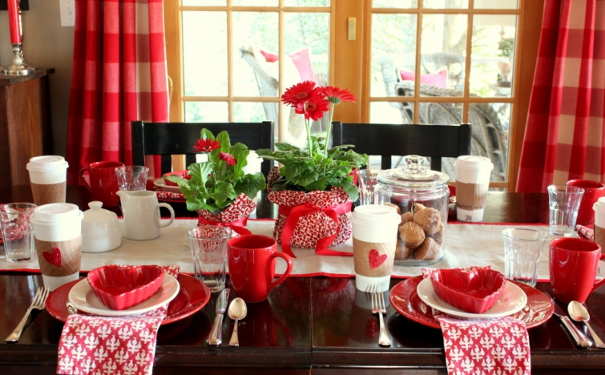
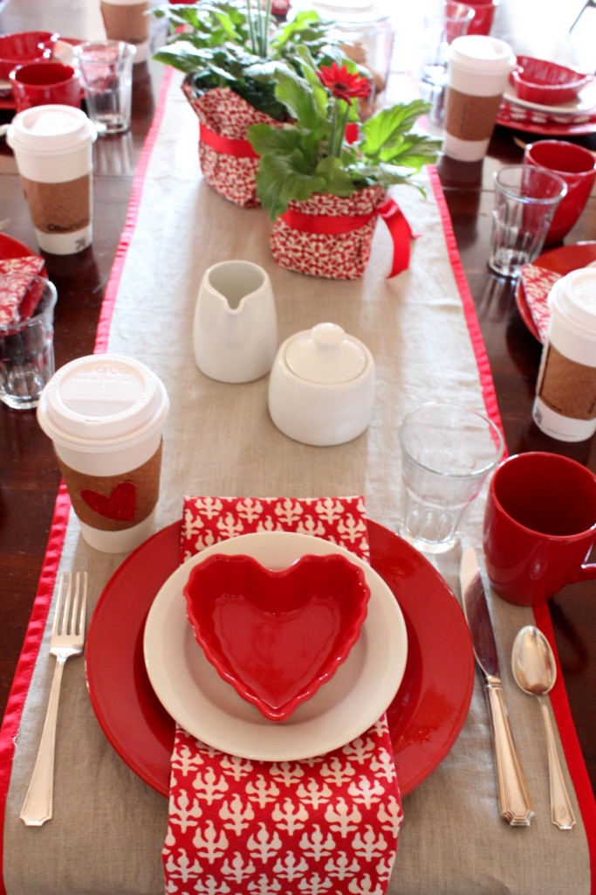

.png)
.PNG)
.PNG)
.PNG)
.PNG)
.PNG)
.JPG)
.JPG)
.PNG)
.PNG)


Last year I decorated the dining room table and most of the house with an old school theme, but I had a new idea for this year. Unfortunately, when I went back to our beloved Target to get the needed items, they were already sold out (and that was February 1st!) So I had to rethink the decorating. Because I have been working on another major project here (more about that at the end of this post) I decided to take the simple route, and go with traditional hearts and flowers for our “theme” this year (if you can call it that).

And I thought a Valentine’s Day breakfast would be the perfect way to start the day and the weekend. That is why all the jars and cake stands are filled with breakfast items…doughnuts, doughnut holes, muffins, bagels, cereals, etc.

Those will all be self-serve, but we will also have the following menu:
And while I was planning a breakfast menu, a gift idea popped in my head. 🙂 I put a Starbucks’ gift card and a couple of Starbucks k-cup coffees in a piece of heart printed tissue and placed them inside a white to-go cup (from Target.) They came with the kraft paper sleeves, and I simply glued a sparkly red heart (from a 98 cent bag of them) onto the sleeves for just a bit of Valentine’s Day decoration.
Granola bars are another breakfast option in a jar in the cabinet.
There is sparkly heart garland over the cereal bar – again made from that bag of 98 cent hearts.
(Didn’t I tell you the theme was hearts? 🙂 )
Krispy Kreme doughnuts – ready to be devoured.
The kitchen desk has breakfast items behind the glass doors, and I chose a recipe for pancakes for this month’s chalkboard.
So most of our breakfast is ready and waiting. I hope to do the pancakes in the shape of hearts, and perhaps the bacon as well. 🙂
One last Valentine idea for you….This year’s teacher’s gift is a bag of Cracker Jacks and a small can of Coca Cola. The tag reads, “Happy Valentine’s Day to a Cracker Jack teacher.” I hope they enjoy them. I am giving Hershey kisses to all my students – sorry not very creative. I had to stick to simple for this year’s Valentine’s Day.
You see there is even more to be happy about this weekend than having a Saturday Valentine’s Day with my husband at home. His birthday is the day after Valentine’s Day, and this birthday is one of those BIG decade-hitting ones for him. 🙂 So my big project has been planning and planning the party for that…a major weekend looong party with a bunch of guys from high school and college. In my mind, our Valentine’s Day was going to simply be a breakfast, and the rest of the weekend was to be devoted to my husband’s birthday celebration. I say, was because sickness, moving, and a few other things have unfortunately occurred with some of “the guys,” and we have decided to delay the party one week. And even though the celebrating won’t be on his actual birthday, it will hopefully work out better for all of our guests. So now, we find ourselves with an entire day for Valentine’s Day, an entire day to celebrate my husband’s birthday with family, and…we both have a holiday on Monday! That was obviously not how we had planned for our weekend to be spent, but it sounds pretty good to me now. 🙂
Enjoy your weekend!!
What do you have planned?


.PNG)
You have the most beautiful handwriting. I can tell you are a teacher. You could be a professional party/event planner as well. You are so good at it.
——————————————————————–
Gosh you are making me blush Michelle! You are so sweet. My daughter wants to be an event planner, so I will leave that field to her. 🙂
But thank you for the compliment!
Kelly
I love everything about your home. I was thinking of adding the black and white buffalo print curtain panels to my windows downstairs. The trim is white and the walls are a soft yellow. I have more of a French country style in my home with a good many black furnishings, as well. Where have you found the best prices for purchasing the larger buffalo check? I am having trouble finding any as large as what you used in the study. I am so glad you are feeling better. I know you are happy to be retiring. Blessings
———————————————————————-
The big black and white check is a steal and a half. It was like $9 a yard from Ikea. They don’t sell it online, but they do carry it in stock in Atlanta. And the fabric is wider than the normal decorator fabric sold in the US. The weight is good too. (Those drapes are super heavy!) I also bought it in khaki and white and will be making drapes out of it for my workroom. You can’t beat Ikea’s prices.
Kelly
I always love your posts and look forward to new ones. I do have a question, how many glass canisters/jars with lids do you have? I counted 10 in this post! I just bought one from Target that’s a beverage dispenser and have several more that are like yours.
——————————————————————
Girl….you are not supposed to ask that! LOL There are 21 that are “out” in the house right now, but there is also the beverage dispenser jar in a cabinet, and 3 other jars holding gingerbread houses in storage in the dining room cabinet. So I have enough to compete with Walmart and Target and Crate and Barrel combined! 🙂 (And there might be one or two up in the room over the garage that I forgot about….)
Kelly
Enjoyed your post as I was traveling on my whirl wind BD weekend with my daughters. Loved looking at everything! We had a nice lunch at Bentos, favorite coffee drinks at Starbucks and back home for a heart shaped ( bake at home- Poppa Murphy’s) pizza and a s’mores pizza for dessert!! On Sunday — favorite Mexican mom and pop’s eatery! Nothing less than an Around the World Eatathon Weekend!:) 73 degrees here today — hope your weekend/ holiday was a great one! Also enjoyed heart shaped white cream donuts! 🙂
——————————————————————–
Are you trying to make me hungry?? (You succeeded. 🙂 ) Sounds like a great way to celebrate your birthday! 🙂
Kelly
Happy Valentine’s Day weekend! Loving all your red and the seasonal décor. I know we are both fans of the color from way back. I remember my mom often mentioning how she had always liked dressing me in red from when I was very little. Makes sense, I still love a bright red scarf, a red winter coat, red boots or shoes, a chunky red sweater! And, February 14th, ah, the day I was engaged – twenty four years ago, tomorrow. Our plans and those of many in southeastern New England are being curtailed by the impending blizzard that is coming in for this afternoon and overnight. I have lost count of the storms and blizzards we have had every week without fail for awhile. This is one of the worst winters in my adult life. But I am enjoying the crisp winter air and the occasional days with brilliant sunshine. Soon, it will be spring and perhaps there will be green grass beneath the feet of snow we have. Enjoy the weekend as I am enjoying all your Valentine postings.
———————————————————————-
What a great day to get engaged! Love it! Hope you are staying warm and safe in the severe weather you all have been having over and over again. And to think we have not had one single prediction of a snowflake this year!
Kelly
I have looked in numerous stores for red heart dishes similar to yours. Could you let us know where you found yours and where you found the red napkins. I really enjoy your blog! Thank you. Nancy
————————————————————————
Nancy, I am afraid those came from Michaels last year, and they did not have them again this year. I tried searching for red heart ramekins, and saw some that were sort of like them but not exactly. I hope you can find some.
Kelly
Kelly, lovely as always. Have a happy birthday and valentine celebration.
Tell Me more about the bead board you are using in home projects.
Details please.
———————————————————————
Thank you Nan. We did have a nice weekend. The bead board that my husband is using is this package from Lowes: http://www.lowes.com/pd_409410-1487-ECB+32+SWWPP_0+1z0yeat__?productId=3799125&Ntt=bead+board&pl=1¤tURL=%3FNtt%3Dbead%2Bboard%26page%3D1&facetInfo=Empire%20Company
Hope this helps.
Kelly
Loved ALL of your posts on Valentine’s Day decorating! All of the little details and your wonderful calligraphy make it all really special!
——————————————————————–
You are too sweet Barbara! Thank you so much. I am glad you appreciated all the details!
Kelly
Happy Valentines Day! That sounds like perfect weekend to me! Enjoy! Hope you can sleep in late and have coffee til noon and just spoil yourselves.
Have loved the red! And you always have so many wonderful entertaining ideas. You are my absolute favorite hospitality queen!
——————————————————————
I hope your Valentine’s Day was a good one Peggy. Sleeping late would be great and lots of coffee sounds like a good idea! A hospitality queen? That’s funny! (But thank you for the compliment. 🙂 )
Kelly
Any kitchen with a pile of Kispy Kremes is a thing of beauty and true love in my book!
———————————————————————-
Amen! (And to think they have just opened a new doughnut shop in our town…we just can’t resist!)
Hope your Valentine’s Day was fun!
Kelly
Hi Kelly, everything looks wonderful! Happy Valentine’s Day – LOVE your blog!
——————————————————————
Thank you Anne! I hope you had a fun Valentine’s Day. 🙂
Kelly
Kelly,
If you ever retire from teaching you could work for a magazine and style rooms and areas of a home. This is charming and clever. I loved the “cracker jack” treat for your fellow teachers as well as the Starbucks gift cups.
Everything looks great and this post made me hungry for donuts!
Enjoy your weekend.
xo,
Karen
——————————————————————
Thank you for your kind words Karen. I am happy you liked all the Valentine ideas. I turned in my paperwork last Friday for retirement at the end of this school year, so I guess I had better start looking for other work! 🙂 A new doughnut shop just opened in our town…perhaps I can put in an application to work there! LOL
Kelly
Your creativity amazes me! And I, too, would love a source for the photo frames throughout your home. Thanks and Happy Valentines Day/Hubby birthday/ long weekend!
——————————————————————-
Barbara, I hope you are doing well. Thank you for the compliments! We had a nice long weekend here. The frames came from Michaels but can be ordered from here: http://www.aifriedman.com/browse.cfm/format-museum-collection-16×20-8×10-frame/4,3746.html
Kelly
Kelly–The whole house looks absolutely warm and inviting and I know it’s the real thing because it’s from your heart.
To my thinking those “big” birthdays need more than a weekend celebration. I have a friend who makes them a month long party–lol. So, Kelly’s hubby, enjoy yourself and Happy Birthday!
Kelly and Arlene@nanaland–let me know your take on the cake. I had planned to make it but plans changed as my group of friends opted to do Chinese food for our Valentine’s get-together. Imagine turning down chocolate…..???
I need to add more red to my home….you’ve inspired me.
——————————————————————–
This house, in all its red, works so well for Valentine’s Day. I can handle the green for St.Patricks, but Easter will be here before you know it, and I am always at a loss for decorating for it….no pastels here for spring!
I agree with your friend and their month long celebration. Great idea!
Kelly
Talk about a bunch of breakfast goodness! Ha, feeling my coffee and oatmeal were not enough this morning! (tummy growls).. 🙂 I see you used your new table runner. How perfect. Starbucks is big here too. How perfect. Happy Birthday to your husband. Have a fun weekend!
——————————————————————-
That was A LOT of breakfast goodies for sure! Yes, I did use the new table runner, and YOU are very observant. 🙂 My husband says thank you for the birthday wishes. Hope your weekend was perfect. A:)
Kelly
It all looks absolutely beautiful, and you’re making me hungry with talk of doughnuts!!
Completely unrelated, but I was pleased to see your copy of Nigel Slater’s ‘Tender’ amongst your books – I’m a big fan of his (and one of my New Year’s resolutions is to eat more veg, so my copy has been getting a workout)
Happy Valentine’s Day!
———————————————————————
Doughnuts and fresh veggies..my kind of meal! LOL
Hope your Valentine’s Day was a good one, Frances.
Kelly
LOVE LOVE LOVE it ALL!!!! You are such a design inspiration to me! Happy Valentines Day Kelly!
———————————————————————-
Jennifer, I LOVE your enthusiasm! Thank you for it. I hope your Valentines Day was one of your best. 🙂
Kelly
Kelly, your home looks fun and festive but always warm and welcoming. I love all of your black and white photos throughout the house. Please share your source for your photo frames??? 🙂
———————————————————————
I am so glad you liked the Valentine’s decorating Sally. I bought all the frames from Michaels, and they do not carry them anymore, but they can be ordered here: http://www.aifriedman.com/browse.cfm/format-museum-collection-16×20-8×10-frame/4,3746.html
I have never ordered from them, but I would hope they would mark it “fragile.”
Kelly
Love all of your decorations, this sounds like the perfect Valentine’s. Happy BD to you hubby too.
———————————————————————-
Thank you Marty. We had a wonderful big breakfast for Valentine’s but I know my husband would have LOVED your coconut banana pie. It sounded heavenly!
Kelly
Nothing big planned here…I do have a gift for my sweetheart and I am making the chocolate pound cake that graced the front of the Southern Living Feb edition. I will be sharing it with my octogenarian neighbors who do not bake. What a pretty table for breakfast!!
———————————————————————–
What a fabulous Valentine’s gift! I know they had to love that. 🙂
Kelly